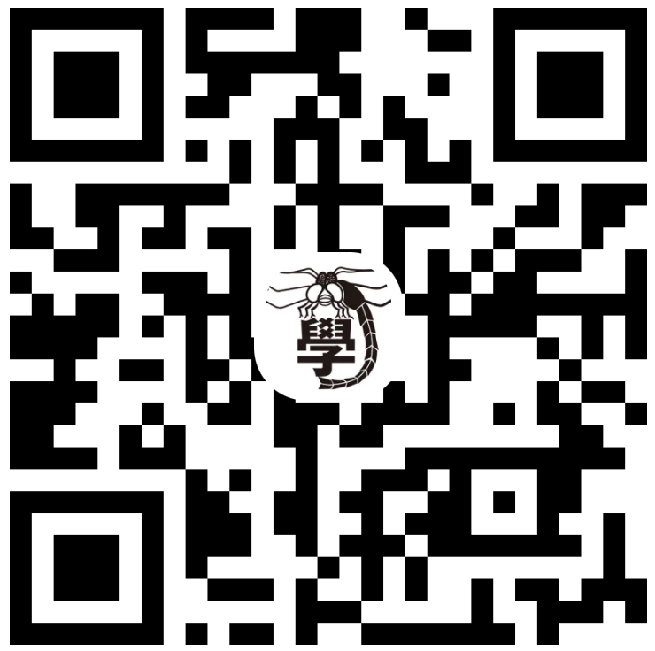

深志学術ネットワーク
Discordコミュニティ — 仕組みと参加方法
深志学術ネットワークは、物理研究会、化学会、博物會、地学會、数学研究会数学班、数学研究会コンピューター班、地歴會の役員が協力して運営するコミュニティです。
とんぼ祭以降、上記の団体に所属していない深志生でも参加可能です。参加は下のQRコードまたは招待リンクから行ってください。参加にあたっては、サーバー内のルールを守って活動してください。
※深志生以外の方のご参加はご遠慮ください。
物理
化学
博物
地学
数学
地歴

サーバーに参加する
https://discord.gg/GtMEj42tSS
目的
- 物理、化学、生物、地学、数学、情報、地歴などの分野を横断し、質問・探究・研究・知識共有・学際交流を行う。
- 特定分野に偏らない知的交流を促進する。
- 科学・学問の入口を広げる。
- 生徒の交流・自治を促進する。
- 休部・廃部による研究記録などの損失を防ぐ。
活動
- 各部活動・グループの研究・実験の共有。
- とんぼ祭等のイベントへの協力。
- メンバー同士の連携を軸にした複数分野の共同研究。
発案・創設者：地歴会会長